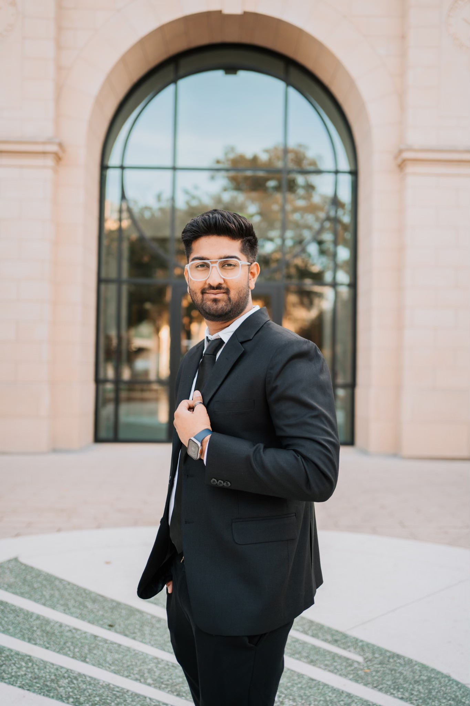

Rohit Kumar Shaw, Infrastructure Engineer at Bank of America, specializing in z/OS network security. I modernize encrypted transport, retire legacy protocols, and build AI driven automation for systems where downtime isn't an option.
I'm an Infrastructure Engineer with around three years at Bank of America, focused on mainframe network security, z/OS platform hardening, and enterprise authentication modernization.
My day to day lives in AT-TLS policy design, SNMPv2 to SNMPv3 migration, RACF integration, and Kerberos/GSS-API single sign-on. Alongside that, I build automation that actually moves the needle, including AI driven RAG retrieval over SharePoint and SMF logs that cuts operational overhead and speeds up how teams find answers.
Outside of production, I write. I'm the author of four IEEE format research papers and two trade articles on mainframe security modernization, turning hands-on engineering into a repeatable, publishable body of work.

Four production efforts at Bank of America where the result was the point, not the slide deck.
Architected and deployed a portal with AI powered search over Excel and sysmod windows, timezone conversion, and region/system queries. Answers that took 15 minutes now take one, with roughly 90% faster resolution, 30% fewer escalations, and around 300 hours a year recovered across the team.
Integrated NAS, RACF mappings, and OpenSSH GSS-API to bring single sign-on to z/OS, cutting password based logins by 85% and automating KDC and keytab deployment so onboarding dropped ~60% and auth tickets fell 40%.
Overhauled SNMP across 100% of mainframe environments, enforcing SNMPv3 only and killing the community string, reducing legacy risk exposure by 75% with no downtime to monitoring.
Leveraged IBM z/OSMF to streamline AT-TLS deployment, cutting change turnaround 60% and shipping 50+ reusable policies. Standardized TCP/IP across 20+ virtual and 30+ z/VM systems, secured 50+ ports, automated monthly IPSec key rotation, and managed 8+ certificate renewals at 100% secure channel uptime.
Full-stack university carpooling platform with JWT session management and real-time ride matching, cutting estimated commuting emissions ~30%.
Accessibility-first tool letting users with color vision deficiencies simulate and adjust profiles, with 30% faster processing through optimized rendering.
C++ engine computing optimal international flight routes across thousands of paths using Minimum Spanning Tree, BFS, and DFS.
Four IEEE format papers and two trade articles documenting mainframe security modernization.
RELEVANT COURSEWORK
Data Structures & Algorithms, Systems Programming, Computer Networks, Database Management, Software Engineering, Certified Ethical Hacking, Internet Programming, Linear Algebra, Statistics, Combinatorics & Graph Theory, A.I.M. Leadership.
Open to infrastructure, systems programming, and security engineering roles. If you're building on the mainframe, let's talk.